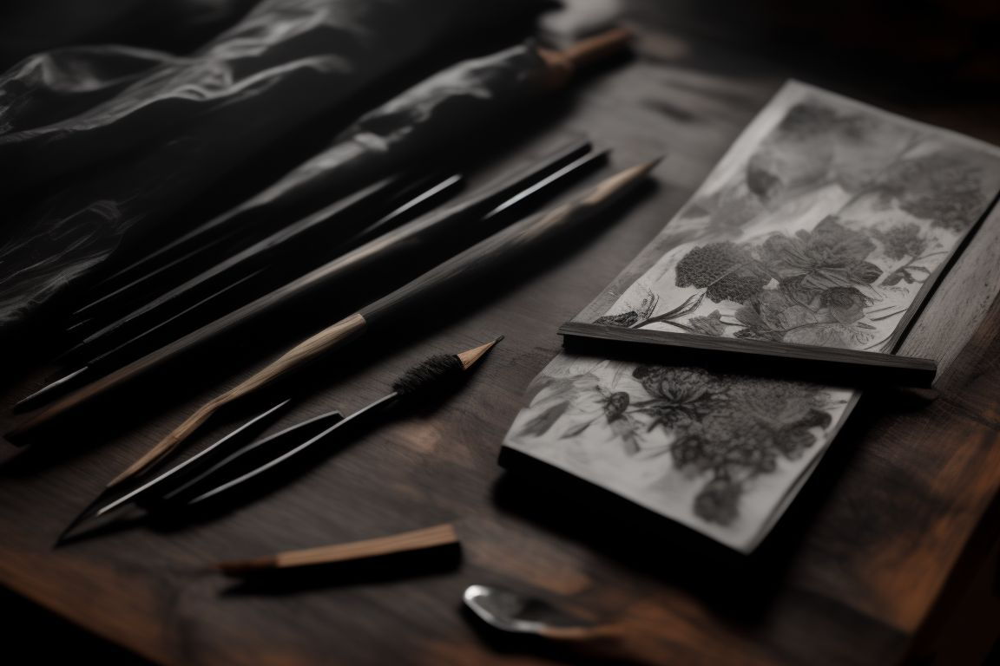

Art forms I practice
SKETCHING
Sketching is a fundamental skill in the world of art, serving as a versatile tool for artists to express ideas, plan compositions, or capture a moment with simplicity. It's a form of drawing that is typically done quickly and with less detail than a finished work. Sketches are often made using pencil, charcoal, or ink, but can also include other mediums.
The beauty of sketching lies in its spontaneity and the freedom it offers, allowing artists to experiment with shapes, lines, and forms.
PAINTING

Painting is a revered and ancient form of artistic expression, dating back tens of thousands of years to the earliest cave paintings. It involves applying pigment to a surface, such as paper, canvas, wood, glass, or walls, using various tools like brushes, knives, or even fingers. This art form allows for a vast range of techniques and styles, from the realistic and detailed to the abstract and expressive. Paintings can be created using a variety of mediums, including oils, acrylics, watercolors, and pastels, each offering unique textures and effects.
Beyond its aesthetic value, painting is often used to convey emotions, tell stories, or capture the artist's perspective of the world. It's a deeply personal practice that can provide both a creative outlet and a means of communication, connecting artists with viewers across different cultures and time periods.
POTTERY

Pottery, one of the oldest human inventions, is the craft of forming objects with clay and other ceramic materials, which are then fired at high temperatures to give them a hard, durable form. This art form combines functionality with aesthetic beauty, ranging from tableware and vases to decorative sculptures.

The process of pottery involves several stages, including clay preparation, shaping, drying, and firing. Techniques vary widely, with some potters using a wheel to shape their work, while others prefer hand-building methods like coiling and pinching. Glazes and paints are often applied to add color and finish to the pieces.
Pottery is not just an artistic endeavor but also a deeply cultural one, often reflecting the traditions and heritage of the people who make it. It's a tactile and meditative process that connects the artist to the earthy medium of clay, offering a unique blend of creative expression and practical craftsmanship.